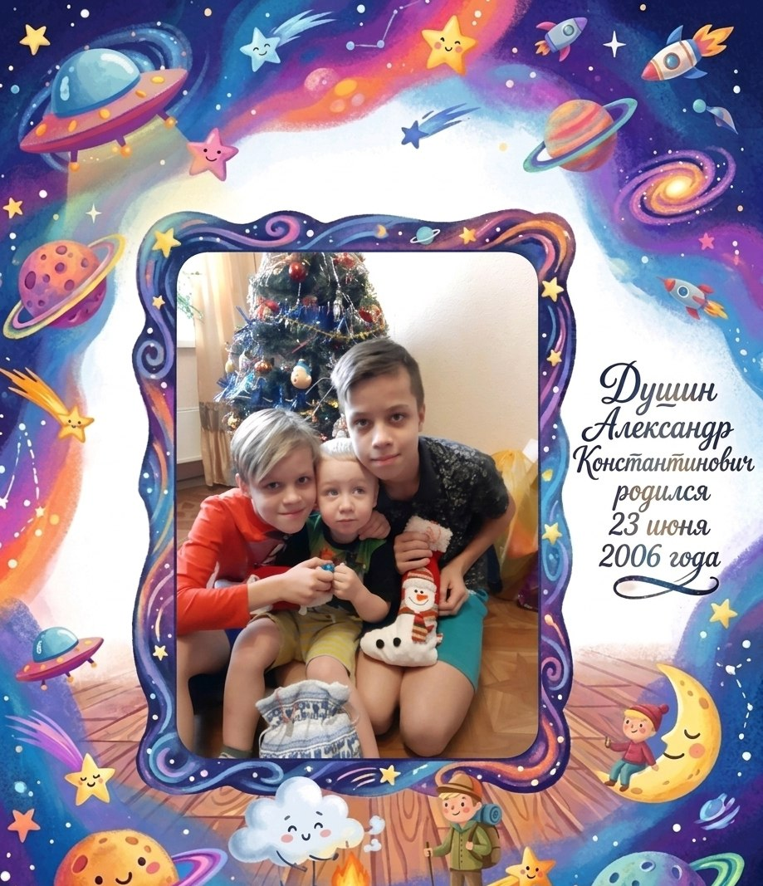

Старший сын

Родился: 23 июня 2006 года
Старший из трех братьев в семье Душиных. Представитель современного поколения, продолжающий историю своего великого рода.
В Александре соединились линии Душиных, Тарасюков, Карповичей и Чаплыгиных. Как старший сын, он является символом продолжения и будущего этой истории.